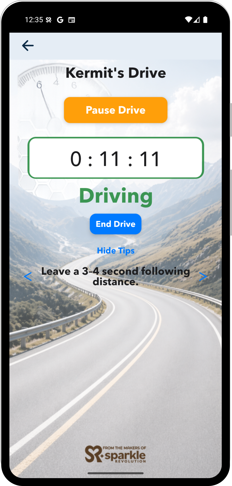
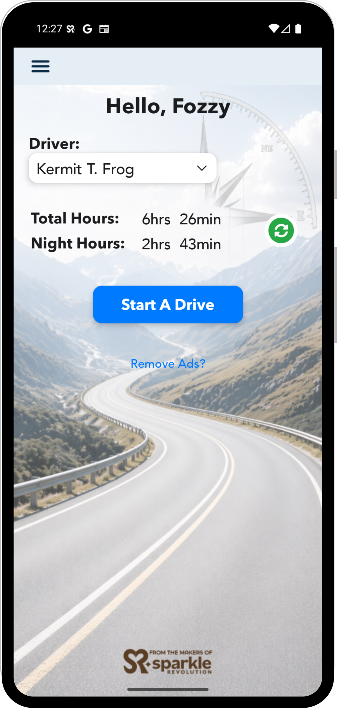
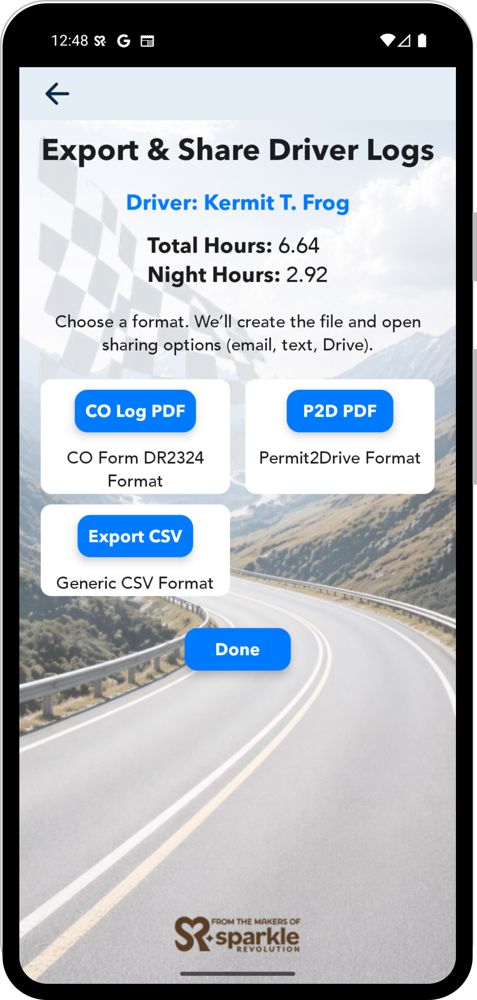
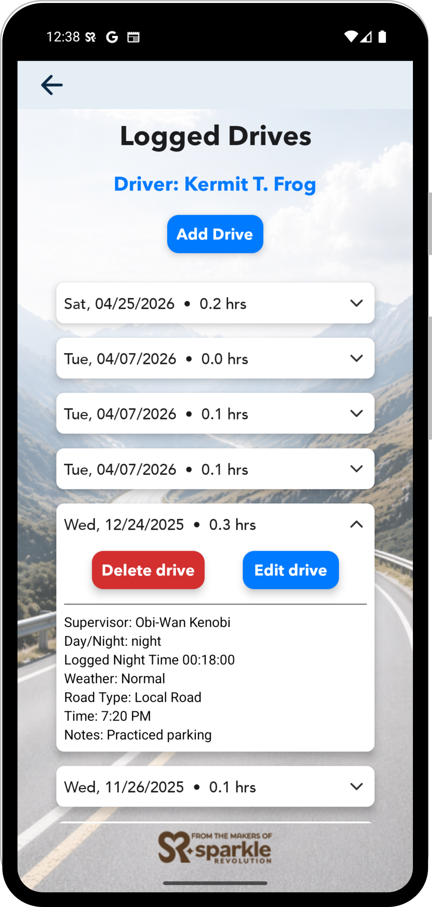
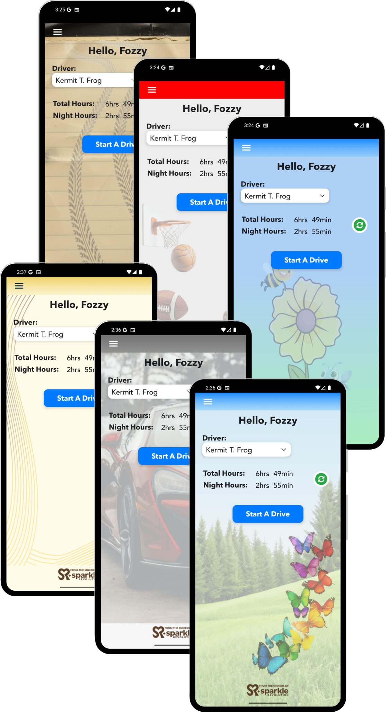

Permit2Drive helps families log supervised driving hours with less friction, clearer totals, and export options that are easy to review and share.

Driving log requirements vary by state. See whether Permit2Drive is a great fit for your state—and what to watch for.
Learning to drive already comes with enough stress. Permit2Drive helps keep the logging part simple, organized, and easy to come back to.
Keep supervised driving hours organized without digging through paper logs or notes.
Start, pause, resume, and save drives with a simple flow that stays out of the way.
Support multiple drivers and supervisors, with local-only or Google Drive sync options.
Review totals and export clean records when it is time to check requirements or submit logs.
From starting a drive to tracking progress and exporting logs, everything is designed to be simple and clear.
Start a drive in seconds

See your progress at a glance

Export clean logs when you need them

Stay organized with a clear drive history
Permit2Drive includes different visual styles so drivers can personalize the app while keeping the same simple logging experience.

Download Permit2Drive and start tracking supervised driving hours today.
Available now on the App Store and Google Play.
We’re still refining the app—feedback is welcome.
Built by Sparkle Revolution to make supervised driving logs simpler for families.